El Mundo
"Todo imperio comienza como una historia."
Vhaldyr, un reino ahora prospero, pero que no siempre ha respondido al mismo nombre. Se tiende a olvidar la historia de sus orígenes, de los sacrificios necesarios para hallar la prosperidad actual. Tras una guerra que duró casi la mitad de un siglo, un nuevo conquistador logró clavar la bandera de la victoria en estas tierras, hasta entonces, prácticamente inhóspitas.
Desde entonces el territorio comenzó a desarrollarse, consiguiendo establecer en él una sociedad que, en pocas décadas, empezó a ser vista por el resto del continente como una potencial enemiga. De un pequeño pueblo que había llegado a sus costas con apenas una docena de hombres adiestrados para el combate, se erigió un reino que, a ojos de los extranjeros, suponía una amenaza. Un simple hombre había conseguido abatir sin dificultad al lider de aquellas tierras y, en el proceso, adueñarse de estas.
Panorama general
En la actualidad el reino se encuentra dividido en varias regiones, cada una con sus propias características y culturas. A parte de la capital, donde se concreta el mayor poder del reino junto a la familia real, hay cuatro ciudades principales repartidas a lo largo de las tierras, cada una encargada de custodiar los distintos sectores del territorio.
Por otro lado, dependiendo de a quién le preguntes y en qué región te halles, es probable que no todos los habitantes del reino sean capaces de afirmar con toda convicción encontrarse en una época de gloria y riqueza, no a menos que seas parte de las clases altas.
En lo alto siempre te encontrarás con el oro, las riquezas y el poder. Si decides mirar hacia abajo, hacia donde se reune el resto del pueblo, verás una realidad muy diferente. La nobleza sigue disfrutando de todo tipo de lujos, mientras que los demás intentan salir adelante en un reino que ya no parece tener cabida para los más desfavorecidos, donde parece haber quedado largo tiempo atrás la preocupación por aquellos que no han nacido con una cuchara de oro en la boca.
Regiones
Si se quisiera dividir el ancho completo del territorio en distintas regiones, lo más acertado sería decir que hay un total de seis, siendo estas de oeste a este y de norte a sur:
- Región forestal. Ocupa el oeste y parte del sureste del reino. Es
una
región rica en biodiversidad, con bosques densos y ríos que alimentan la flora y fauna local. Los
habitantes de esta zona se dedican principalmente a la recolección de recursos naturales,
principalmente la madera, que normalmente se usa para construir nuevos edificios o, en las
estaciones más frías, para encender chimeneas en el interior de los hogares. En esta región destaca
las Aguas de Elysar, un enorme lago rodeado de montañas y bosques
cuyas propiedades, si
bien no son beneficiosas para los efímeros al entrar en contacto directo con el agua, son utilizadas
en campos como la medicina.
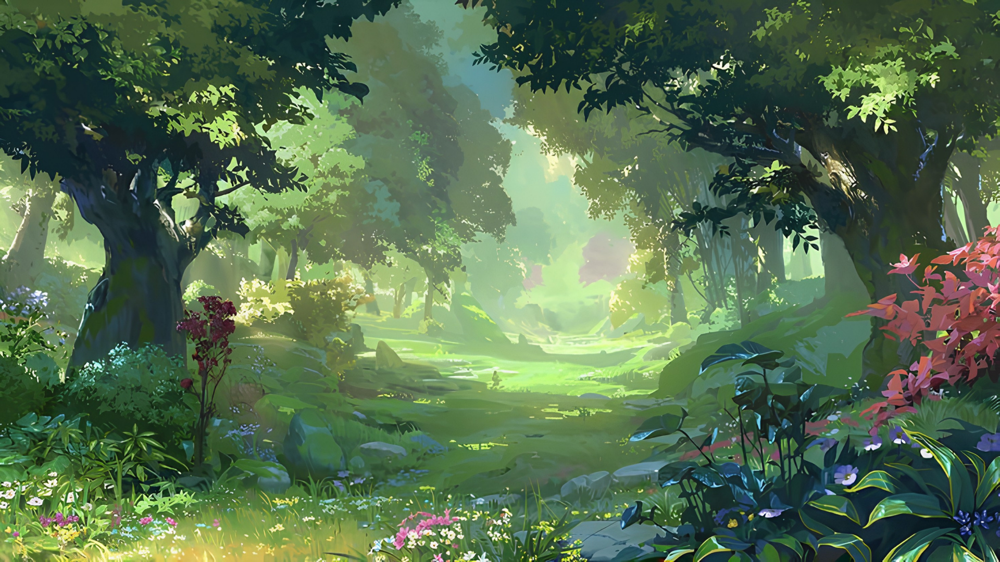
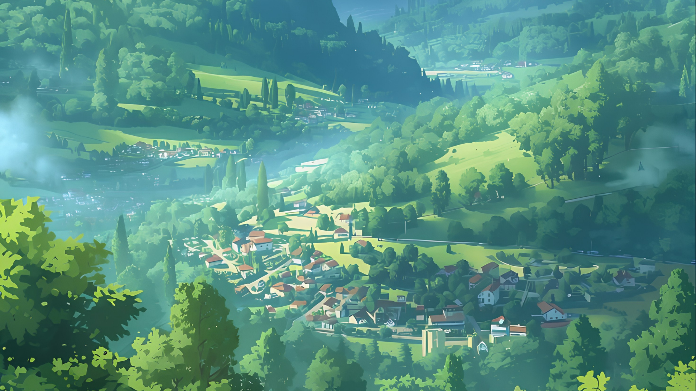
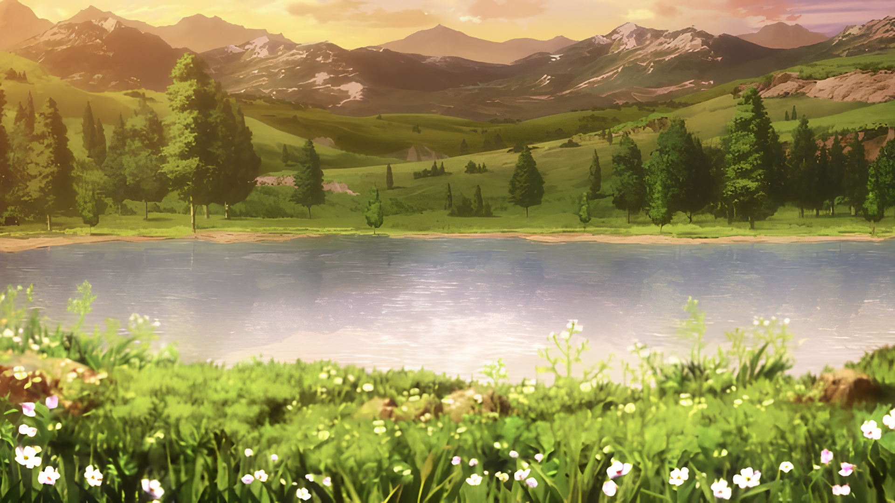
- Región montañosa. Es una de las zonas de más difícil acceso dentro
del reino. Casi podría tratarse de una pequeña península cuyo único acceso al resto del territorio
es a través de un estrecho paso montañoso, lo cual no hace de su acceso uno especialmente amable. En
esta zona destacan las Agujas de Arkheon, conformadas totalmente de
roca. A pesar de
existir una zona totalmente destinada a la minería, de esta formación natural en concreto puede
extraerse un tipo de material usado principalmente en la construcción de las murallas que fortifican
las ciudades.
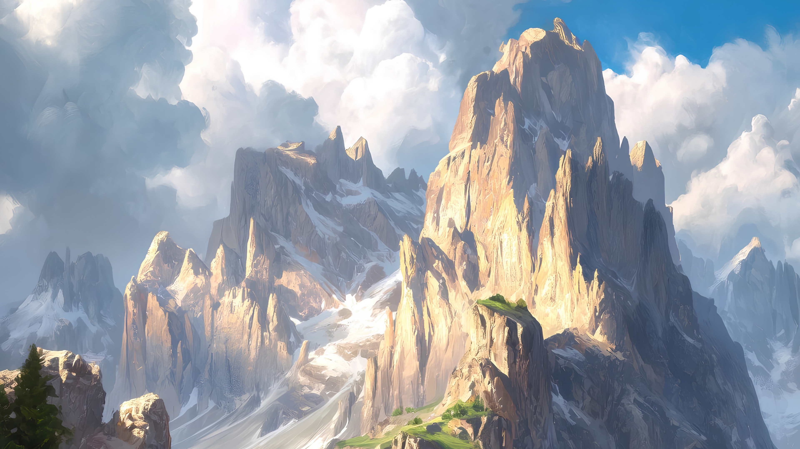
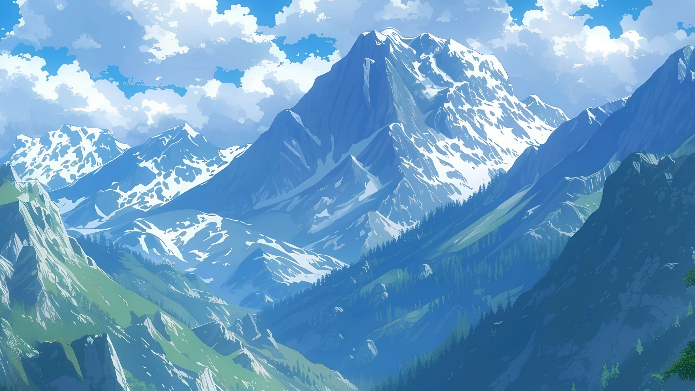
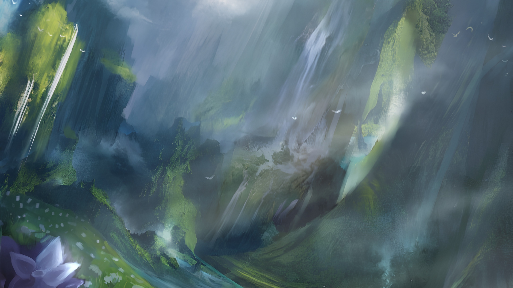
- Región minera. Se encuentra al norte del reino, justo en el centro
de este. Las montañas y cuevas que son explotadas como minas debido a la alta cantidad de metales y
piedras preciosas que contienen, también hacen una barrera natural con el resto del continente,
obteniendo así una defensa compleja de atravesar sin ser detectado en el proceso. La mina más
importante de todas las allí presentes es llamada las Vetas de
Othren, debido a que de ella
salen las joyas de mayor calidad. En más de una ocasión ya ha habido guerras territoriales por el
derecho sobre estas, lo que hace de algo natural que cada pocos años se estén escuchando nuevas
historias de guerra entre dos apellidos.
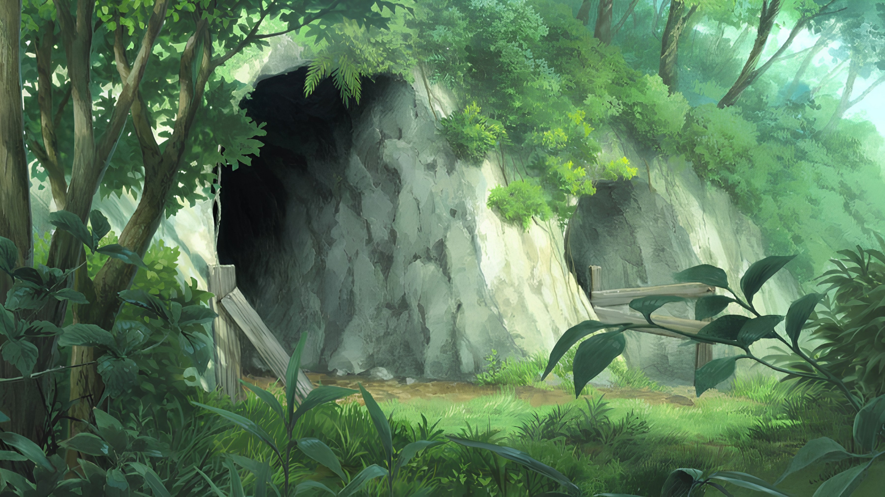
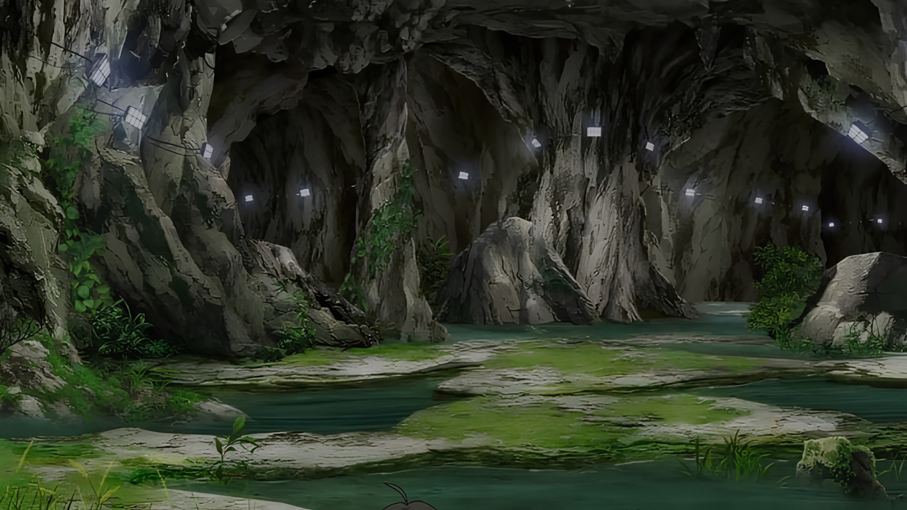
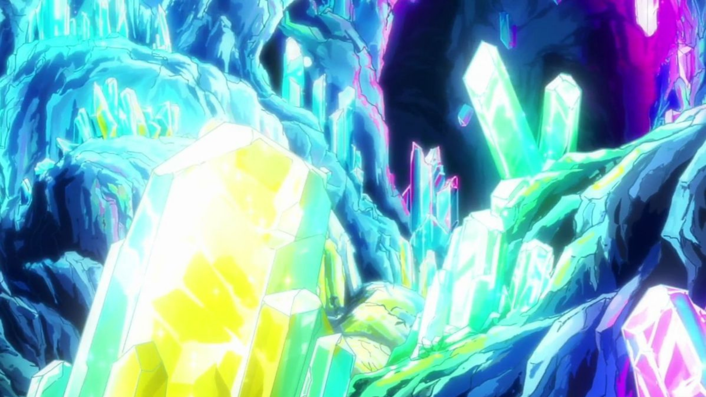
- Región volcánica. Al noreste del reino. Como su nombre indica, en
ella puedes encontrar un gran volcán que si bien lleva inactivo siglos, su constante emisión de humo
provoca la incertidumbre de que en cualquier momento pueda erupcionar. Los habitantes del reino
llaman al volcán las Faldas de Sareth. A la izquierda de este se
pueden encontrar aguas
termales, mientras que a su derecha todo lo que hay son bosques ya muertos, conocidos más bien bajo el nombre de las Cenizas de Orel. Los pocos núcleos
poblados que se encuentran en esta zona se encargan de custodiar no solo el estado del volcán, sino
también la frontera con el resto del continente, debido al fácil acceso que hay en ella. Es
recomendable tener cuidado cuando se camina por esta zona, debido a que hay varios géiseres en el
suelo que han sorprendido a los transeúntes en más de una ocasión.
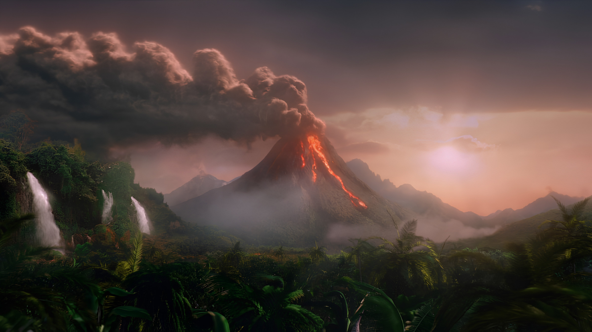
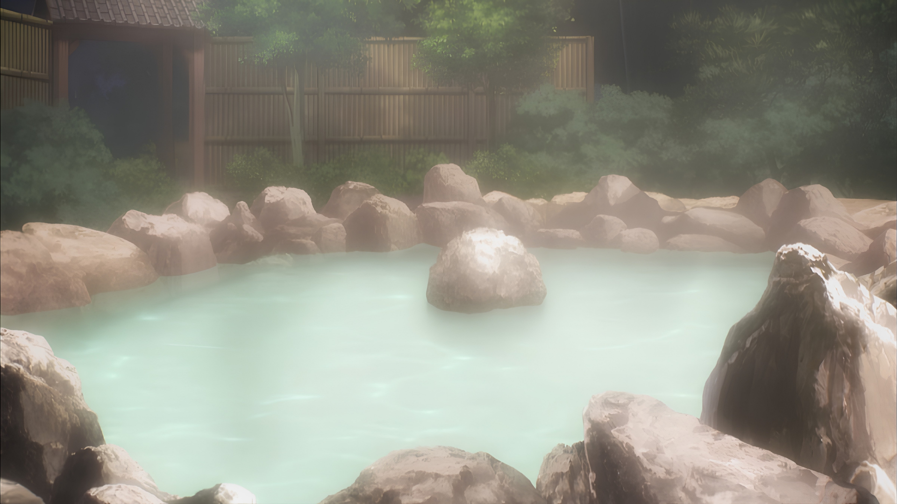
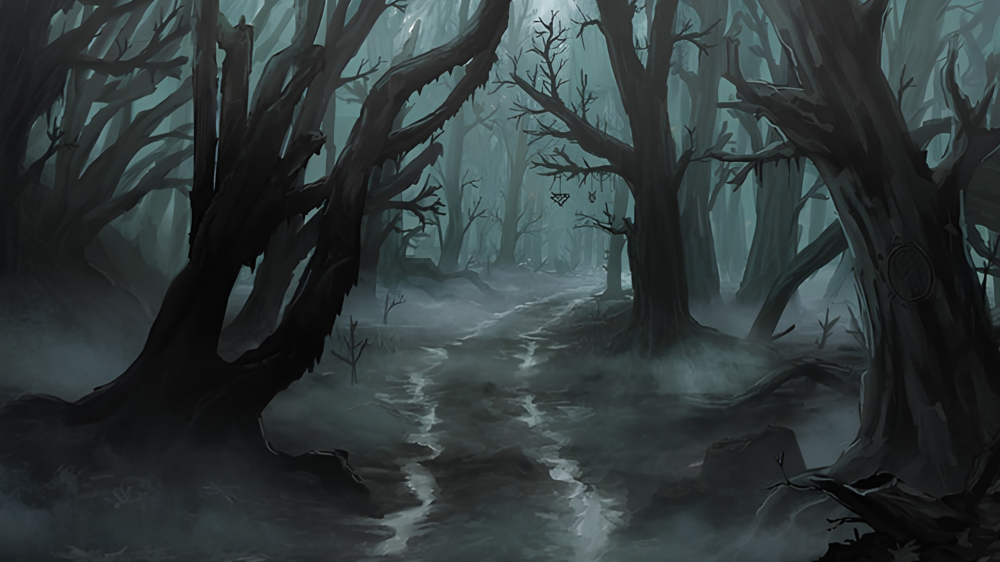
- Región agrícola. Recorre todo el este del reino. En ella pueden
encontrarse desde campos de cultivo hasta granjas animales, siendo esta la zona más productiva del
reino. La mayoría de los habitantes de esta región se dedican a la agricultura y ganadería,
abasteciendo al resto del territorio con alimentos y productos derivados. Destacan los Vergeles de Lyrienne, una pequeña agrupación montañosa con zonas
verdes, especialmente importante por el descubrimiento de plantas medicinales que solo crecen en
ella. Además, podría decirse sin miedo alguno que probablemente se trate de la zona más rica del
reino —sin contar la capital—, debido a que una parte de los productos que se cultivan en ella son
exportados al resto del continente.
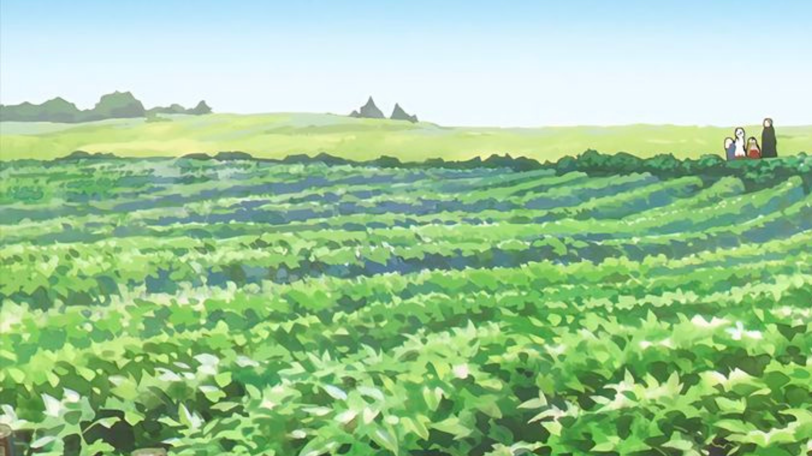
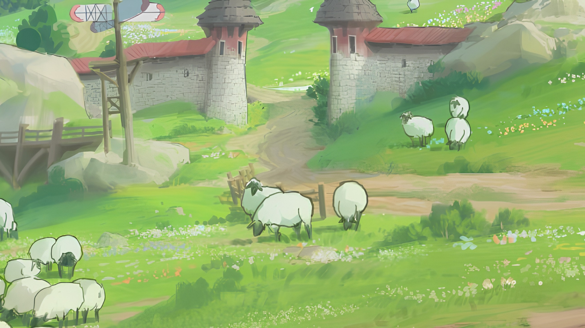
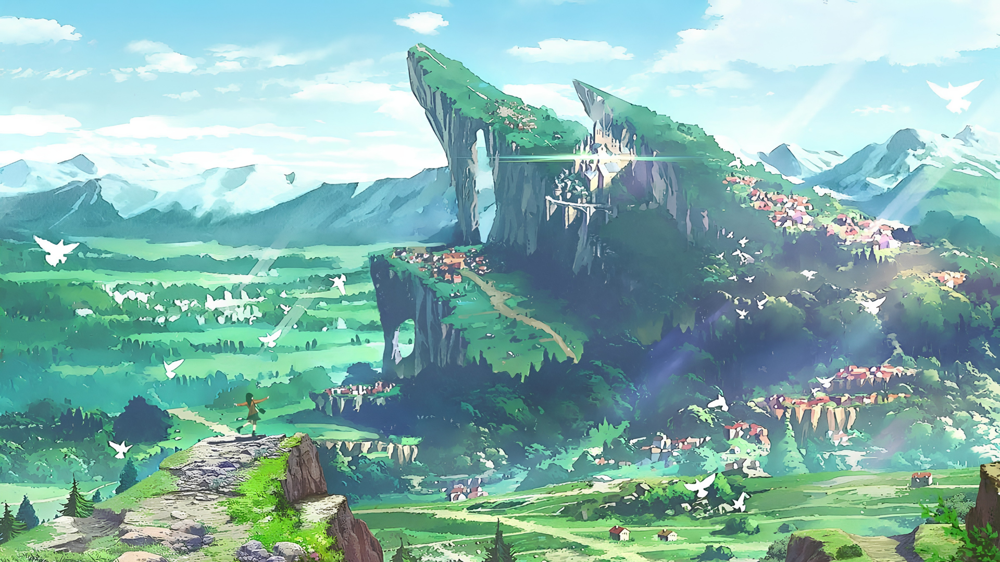
- Región desértica. Se trata del sur del reino, una zona árida y
calurosa donde la vida es más difícil de mantener. A pesar de ello, hay pequeños asentamientos que
han logrado adaptarse a las condiciones extremas del desierto. La región es conocida por sus dunas y
oasis, siendo estos últimos puntos vitales para la supervivencia de los habitantes y viajeros.
Destaca las Fuentes de Khelar, un oasis que sirve como punto de
encuentro y comercio entre los distintos pueblos del desierto. Otro gran punto de interés es la Garganta de Rhaelor, un cañón al oeste del desierto que, a pesar de
su belleza natural, es un lugar peligroso debido a sus abruptos acantilados y la fauna salvaje que
lo habita.
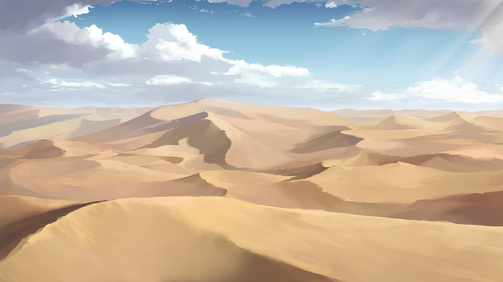
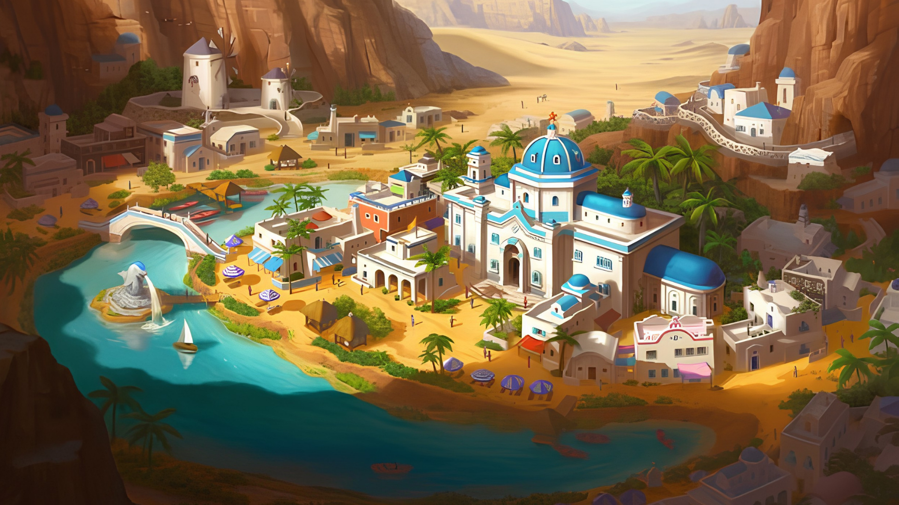
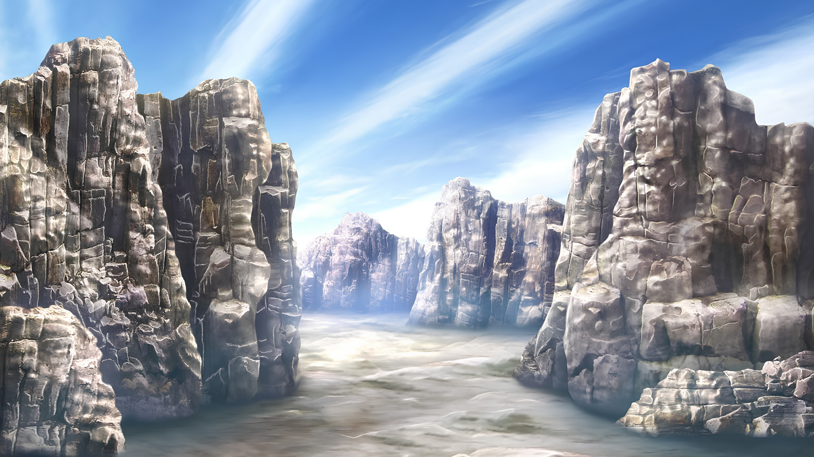
Climas, ecosistemas y geografía
A lo largo de Vhaldyr, se pueden encontrar una gran variedad de climas y ecosistemas. Desde los bosques templados en el norte hasta los desiertos áridos en el sur, cada región presenta características únicas que influyen en la vida de sus habitantes y en la flora y fauna que la habitan.
Respecto a los climas, en el reino pueden encontrarse un total de cinco tipos distintos, cada uno con sus propias condiciones atmosféricas y patrones de precipitación.
- Clima de bruma. Fresco y húmedo, con veranos suaves e inviernos especialmente lluviosos, predominante en las regiones boscosas y montañosas. Se da en el oeste y en el noroeste del reino.
- Clima de aspereza. Extremadamente seco, con una humedad casi inexistente y grandes contrastes térmicos entre sus períodos cálidos y fríos. Se dan en el norte y el centro del reino
- Clima de ceniza. Cálido y seco, marcado por temperaturas elevadas durante todo el día, terrenos áridos y una constante presencia de emanaciones sulfurosas. Se da en el noreste del reino.
- Clima de cosecha. Cálido y húmedo, con abundantes lluvias durante las estaciones frías y temperaturas elevadas durante las cálidas, favoreciendo la actividad agrícola. Se da en el este del reino.
- Clima de contraste. Seco y abrasador, caracterizado por temperaturas extremadamente altas durante el día y descensos bruscos durante la noche. Se da en el sur del reino.
Por otro lado, los ecosistemas presentan una notable diversidad, determinada principalmente por el clima, la altitud, la disponibilidad de agua y las características del terreno. Desde los áridos desiertos del sur hasta los bosques y cordilleras del oeste, cada región alberga una flora y fauna adaptadas a sus condiciones particulares. Esta diversidad no solo define el paisaje del reino, sino que también ha condicionado el asentamiento de sus poblaciones y el aprovechamiento de sus recursos naturales.
Finalmente, la geografía está marcada por un relieve diverso, en el que conviven extensas llanuras, cordilleras, regiones volcánicas y grandes áreas desérticas. Las diferencias de altitud y la distribución de ríos, costas y tierras fértiles han dado lugar a paisajes muy distintos entre sí, condicionando tanto la naturaleza como la distribución de sus poblaciones y actividades. Desde las áridas extensiones del sur hasta las cordilleras y bosques del oeste, el territorio cambia notablemente a lo largo de sus fronteras, mientras que la región central actúa como punto de unión entre sus principales dominios.
Pueblos y etnias
Vhaldyr está habitado por diversos pueblos, cada uno marcado por el territorio en el que se ha establecido y por las circunstancias que han moldeado su historia. Aunque los efímeros constituyen la población predominante y se encuentran repartidos por todo el reino, otras comunidades permanecen ligadas a regiones concretas, algunas de ellas prácticamente desconocidas para el resto de habitantes.
El conocimiento sobre estos pueblos no es uniforme. Mientras algunos mantienen relaciones estrechas con el reino, otros viven aislados o se han convertido en objeto de rumores y leyendas. En los confines más remotos de Vhaldyr, incluso existen comunidades cuya existencia jamás ha podido ser confirmada.
- Los Ausentes. Grupos nómadas del desierto conocidos por sus asaltos a caravanas y su carácter impredecible. Se desconoce dónde establecen sus campamentos.
- Los Linderos. Pueblo asentado en las proximidades del cañón del sur. Custodian sus accesos y sirven como último asentamiento antes de adentrarse en sus zonas más peligrosas.
- Los Silentes. Una pequeña civilización oculta en los bosques muertos de la región volcánica. Se les atribuye un carácter hostil y jamás se les ha visto abandonar su territorio.
- Los Templadores. Habitantes ancestrales de las regiones mineras del norte. Conservan el control de la extracción y la forja de los recursos, colaborando con el reino desde su conquista.
- Los Veladores. Supuesto pueblo de las Agujas de Arkheon. Su existencia no ha sido confirmada, aunque numerosos visitantes aseguran haber sentido que alguien los observaba.
- Los Inhallables. Supuesto pueblo de las Aguas de Elysar cuya existencia tampoco ha podido demostrarse. Las historias sobre ellos nacen de la extraña sensación de preservación y vigilancia que experimentan quienes visitan la región.
Recursos naturales y rutas
La diversidad geográfica de Vhaldyr determina también la distribución de sus recursos naturales y las rutas que conectan sus territorios. Cada región aporta materias primas y productos propios, mientras que montañas, desiertos, bosques y otras formaciones condicionan las vías por las que estos recursos son transportados.
El comercio y el abastecimiento del reino dependen de una red de caminos y pasos que enlaza sus principales asentamientos. Algunas rutas son transitadas y seguras, mientras que otras requieren precaución debido a las condiciones del terreno, el clima o la presencia de territorios poco conocidos. Las principales rutas y recursos son:
- Rutas terrestres. Los principales caminos conectan las regiones habitadas y permiten trasladar mercancías entre las zonas de producción y los grandes núcleos de población.
- Pasos y rutas peligrosas. Determinados territorios, como el desierto, las regiones montañosas y la zona volcánica, cuentan con rutas restringidas o de difícil tránsito.
- Recursos minerales. Las minas del norte concentran buena parte de los minerales y metales empleados en la construcción, la forja y la fabricación de armas y herramientas.
- Producción agrícola. Las tierras del este proporcionan la mayor parte de los cultivos del reino gracias a su clima húmedo y favorable para la agricultura.
- Recursos forestales. Los bosques del oeste suministran madera, plantas y otros materiales de origen vegetal, además de constituir uno de los principales espacios naturales de Vhaldyr.
- Recursos volcánicos. La región concentra obsidiana, azufre, minerales volcánicos y rocas ígneas, aunque su extracción resulta especialmente peligrosa debido a las condiciones del terreno.
- Recursos del desierto. El sur destaca por sus depósitos de sales minerales, cristal de arena, plantas resistentes y piedra, además de sus rutas caravaneras.
Lugares emblemáticos
Vhaldyr cuenta con numerosos lugares que destacan por su importancia política, militar, económica o natural. Desde Astergard, corazón del reino, hasta las regiones más remotas de sus fronteras, cada territorio alberga enclaves que han adquirido un papel fundamental en la historia y la protección del reino.
Entre ellos destacan sus cinco grandes ciudades, además de algunas formaciones naturales cuya relevancia trasciende sus propios límites. Mientras Astergard concentra el poder político y la vida de la nobleza, las ciudades regionales cumplen funciones estratégicas que permiten a Vhaldyr mantener vigiladas sus fronteras y proteger sus principales vías de acceso.
Astergard
Capital de Vhaldyr, constituye el centro político y administrativo del reino. Es el principal escenario de los acontecimientos de mayor relevancia y alberga a la familia real junto a algunas de las casas nobles más prestigiosas. Su posición central facilita además la conexión entre las distintas regiones del territorio.
Las ciudades fronterizas
Nhalem, en el oeste, protege las costas mediante una cadena de torreones construidos sobre los acantilados, desde los que se vigila el tránsito marítimo. Su posición también permite controlar las rutas de acceso a las regiones montañosas y reaccionar rápidamente ante cualquier amenaza procedente del mar.
Edevane, al norte, mantiene una estrecha relación con los Templadores y supervisa que la explotación de las minas se desarrolle sin conflictos entre estos y la administración de Vhaldyr. Su guarnición también ocupa posiciones elevadas en las montañas, desde donde vigila la frontera y los pasos naturales hacia el interior.
Selkaron, situada al este, protege la frontera más abierta de Vhaldyr hacia el resto del continente. Debido a su posición, concentra algunas de las fuerzas militares más importantes del reino y funciona como uno de sus principales puntos de respuesta ante posibles incursiones. También constituye un importante punto de entrada y salida para el comercio continental.
Oxmere, en el sur, mantiene puestos militares distribuidos a lo largo de sus playas para impedir desembarcos enemigos. Su guarnición debe además lidiar con las dificultades propias del desierto y mantener protegidas las rutas que conducen hacia el interior del reino.
Los grande enclaves naturales
Más allá de sus ciudades, Vhaldyr está definido por una serie de accidentes geográficos que han adquirido un carácter emblemático. Las Agujas de Arkheon se alzan en el oeste como una de las formaciones montañosas más imponentes del reino, mientras que las Aguas de Elysar destacan por la extraña sensación de preservación que rodea sus aguas y por las historias sobre los Inhallables.
En el sur se extiende la Garganta de Rhaelor, una de las zonas más peligrosas del desierto y un territorio precedido por los asentamientos de los Linderos. En la región volcánica se encuentran las Cenizas de Orel, cuyos árboles marchitos y condiciones hostiles han convertido su interior en un lugar que pocos se atreven a explorar. Las Vetas de Othren, por su parte, constituyen uno de los principales enclaves económicos de Vhaldyr y permanecen estrechamente ligadas a la tradición de los Templadores.
Tensiones actuales
Aunque Vhaldyr mantiene una aparente estabilidad, el reino se encuentra atravesado por diversas tensiones que afectan tanto a sus relaciones internas como a su posición frente al resto del continente. La competencia por el poder y la influencia convive con una amenaza exterior que, pese a permanecer contenida, nunca ha desaparecido por completo.
Tensiones internas
Las principales ciudades de Vhaldyr mantienen una constante rivalidad por obtener el mayor favor de la capital y aumentar su influencia dentro del reino. Esta competencia se refleja en sus relaciones políticas, económicas y militares, convirtiendo a las grandes ciudades en piezas fundamentales del equilibrio interno de Vhaldyr.
Tensiones externas
Más allá de sus fronteras, Vhaldyr es contemplado por buena parte del continente como un enemigo que debería desaparecer. Las amenazas de intervenir contra el reino no son nuevas, pero rara vez han pasado de las palabras: la victoria de la actual dinastía durante la conquista de Vhaldyr dejó una huella demasiado profunda como para que sus antiguos adversarios se atrevan a iniciar un nuevo conflicto abiertamente.
Sin embargo, los siglos no han borrado aquella rivalidad. La posibilidad de una nueva confrontación permanece latente, obligando al reino a mantener sus fronteras protegidas y a no subestimar las intenciones de sus vecinos.
"El mundo no es justo, pero es nuestro. Y aun así, seguimos escribiendo su historia."